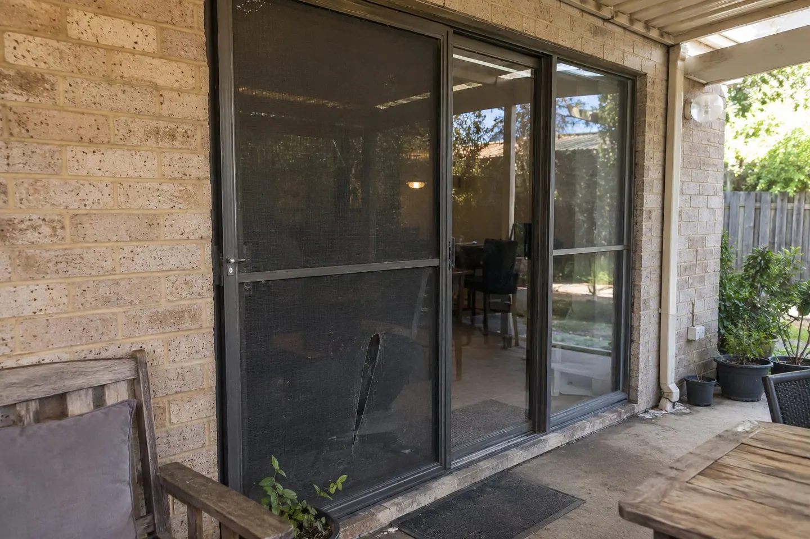
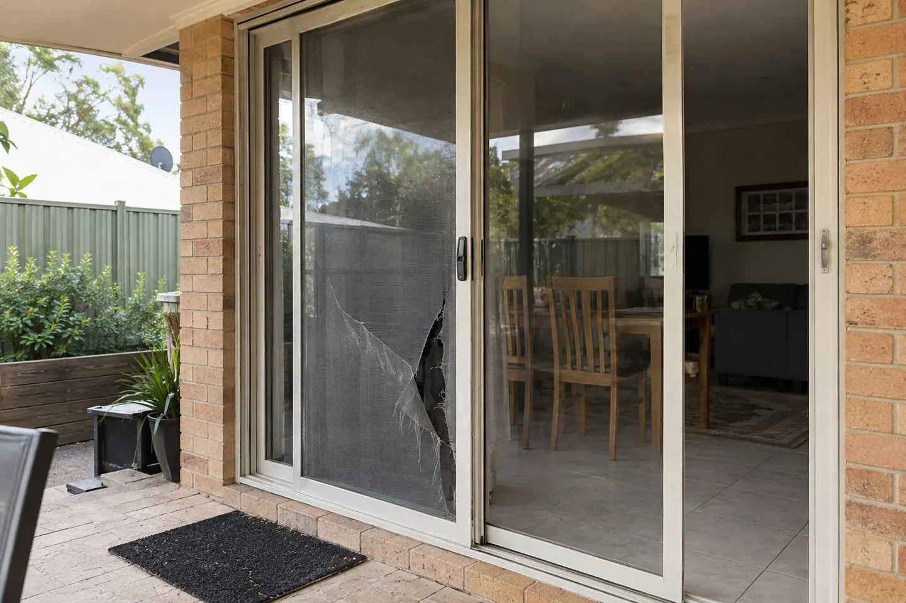
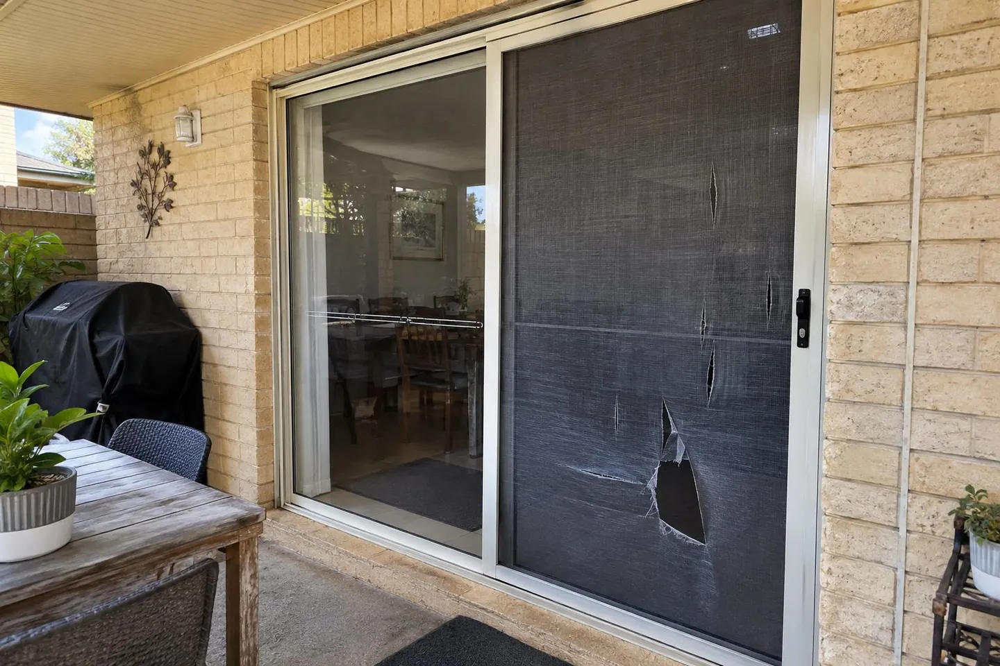
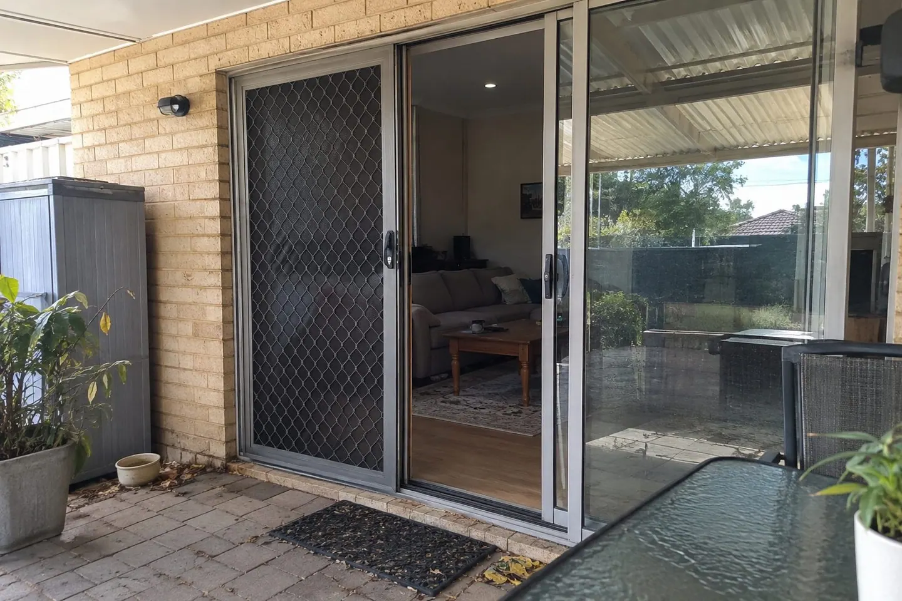

Recent project
Torn flyscreen mesh repair & remeshing
A photographic sequence documenting torn flyscreen mesh repair and remeshing on an ordinary sliding door screen.
The project
Torn flyscreen mesh repair and remeshing
These images show a torn sliding-door flyscreen, active repair work and a remeshed screen-door presentation. Common repair concerns include torn flyscreen mesh, flyscreen remeshing and damaged mesh before a rental inspection. This page concerns ordinary flyscreens, not regulated security screens. Contact Ellis about the damaged mesh or frame. Existing photos are optional; we check the screen on site.
Scope
Repair and remeshing of an ordinary sliding-door flyscreen, with torn mesh details and repair work shown.
Outcome
The final photograph shows the remeshed screen-door presentation. This example concerns an ordinary flyscreen and does not establish security-screen performance.
Project gallery
Flyscreen remeshing details shown




Contact Ellis Perth
Torn Mesh & Flyscreen Door Repairs in Perth
Contact Ellis directly to arrange an on-site assessment. Tell us what needs repairing and your Perth suburb or postcode. Existing photos and approximate measurements are optional; we inspect the property and confirm the repair plan and written quote.